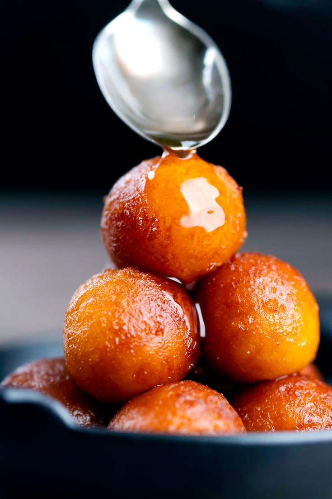
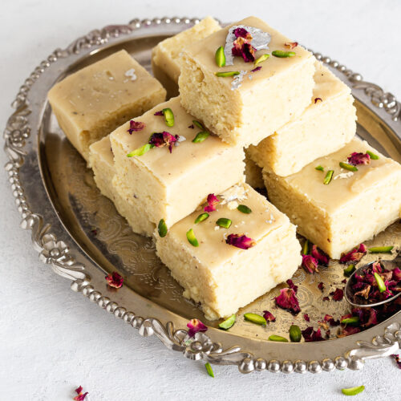
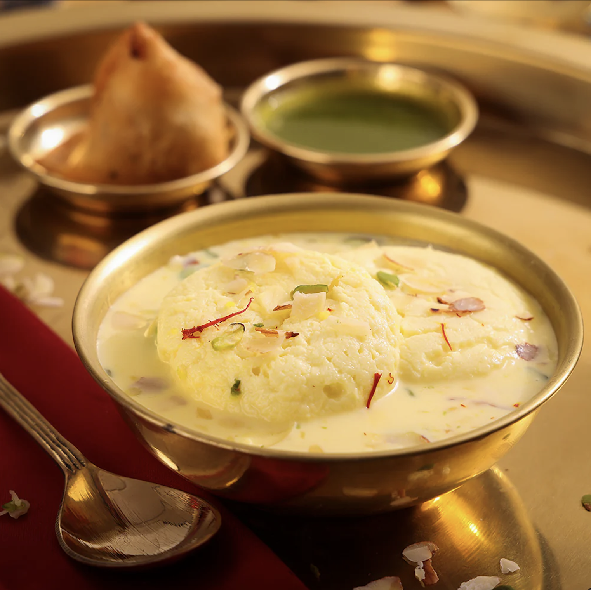
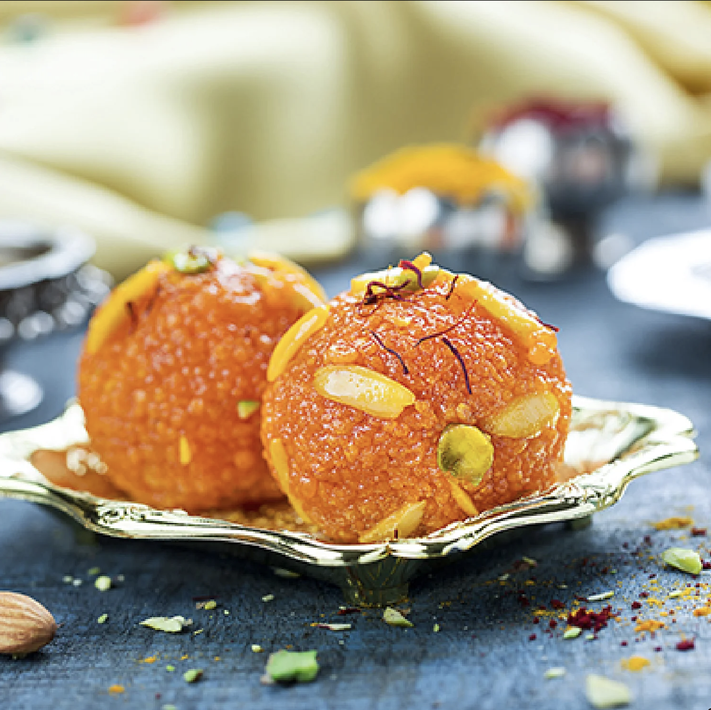
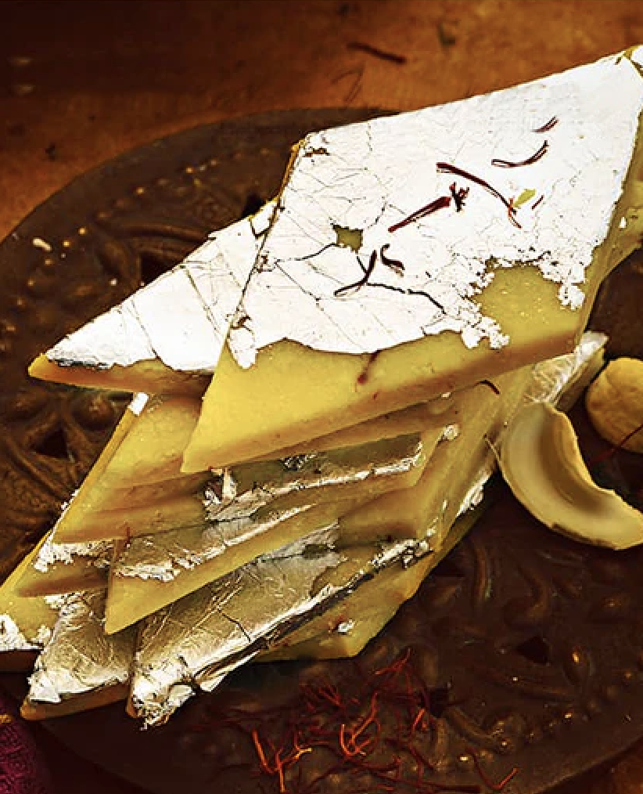

Gulab Jamun
Ingredients
- Khoya (Mawa)
- Maida (Flour)
- Cardamom Powder
- Sugar
- Water
- Rose Water
- Ghee for Frying
Recipe
- Mix khoya, maida, and cardamom powder to form a smooth dough.
- Shape into small balls without cracks.
- Fry the balls in ghee until golden brown.
- Prepare sugar syrup with water, sugar, and rose water.
- Soak fried balls in the warm syrup for at least 30 minutes.

Milk Barfi
Ingredients
- Condensed Milk
- Milk Powder
- Cardamom Powder
- Ghee
- Chopped Nuts (Optional)
Recipe
- Heat ghee in a pan and add condensed milk.
- Mix in milk powder and cardamom powder.
- Cook on low heat, stirring continuously, until thick.
- Transfer to a greased plate and flatten the mixture.
- Garnish with chopped nuts and let it set before cutting into pieces.

Rasmalai
Ingredients
- Chenna (Paneer)
- Milk
- Sugar
- Saffron
- Cardamom Powder
- Chopped Pistachios
Recipe
- Prepare chenna and shape it into flat discs.
- Boil sugar syrup and cook the discs until they double in size.
- Reduce milk with saffron and cardamom to make thickened milk (rabri).
- Soak the cooked discs in the rabri and chill.
- Garnish with pistachios before serving.

Motichur Ladoo
Ingredients
- Besan (Gram Flour)
- Milk
- Orange Food Color
- Sugar
- Water
- Ghee for Frying
- Chopped Nuts (Optional)
Recipe
- Prepare a batter with besan, milk, and food color.
- Fry tiny boondi balls using a perforated spoon.
- Make sugar syrup and mix in the boondi.
- Shape into laddoos once the mixture cools slightly.

Kaju Katli
Ingredients
- Cashews
- Sugar
- Water
- Ghee
- Edible Silver Leaf (Optional)
Recipe
- Grind cashews into a fine powder.
- Prepare sugar syrup with a single-thread consistency.
- Mix in the cashew powder and cook to form a dough.
- Roll the dough and cut into diamond-shaped pieces.
- Decorate with edible silver leaf if desired.
